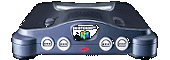

|
|  |
ボディの色は、「世界市場でひとつの色」を合い言葉に決定されました。
たとえば、スーパーファミコンはライトグレーがベースカラーでしたが、アメリカ版スーファミであるSUPER NESは、パープルがイメージカラーとなっていました。これは、ユーザーの好みなどを反映してのことでした。でも、NINTENDO64が目指したのは、世界中で同じ色のロクヨンが販売されることだったのです。 そこで、どこの国でも嫌われない、ニュートラルでカッコいい色を見つけるため、実際にボディに数々のペイントがほどこされました。候補にあがったのは、明るいグレー、暗いグレー、白、黒、紺色などです。こうしていまのボディの色が決まったのです。 ちなみに、コントローラの色がライトグレーなのは、スーパーファミコンの面影なんです。コンセプト通り、アメリカや世界市場を強く意識したルックスに仕上がったため、そこらへんに日本っぽさを残したワケです。なんだかホッとするでしょう？ |
| デザインのコンセプトのページへ |
 |